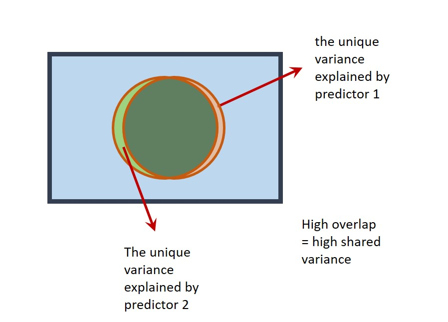

Multicollinearity
If the correlation between predictors is very high (greater than r = 0.9), this is known as multicollinearity. On a Venn diagram, the circles representing the predictors would almost completely overlap. Multicollinearity can be a problem in multiple regression. Predictors may explain a large amount of variance in the outcome variable, but their ‘unique’ contribution in a multiple regression may be small. A situation can arise where neither predictor may be statistically significant even though the overall regression is significant!

An example of multicollinearity in the ExamData dataset can be seen with the variables project and proposal.
Obtain the correlation between project and proposal:
ExamData %>%
select(project, proposal) %>%
cor()
> project proposal
> project 1.0000000 0.9371487
> proposal 0.9371487 1.0000000The correlation between project and proposal is r = .
To see the effects of multicollinearity, conduct a regression with finalex as the outcome variable and project and proposal as the predictor variables.
multi1 <- lm(finalex ~ project + proposal, data = ExamData)
summary(multi1)
>
> Call:
> lm(formula = finalex ~ project + proposal, data = ExamData)
>
> Residuals:
> Min 1Q Median 3Q Max
> -64.287 -22.590 -0.346 22.395 70.289
>
> Coefficients:
> Estimate Std. Error t value Pr(>|t|)
> (Intercept) 4.8784 40.8601 0.119 0.906
> project 1.2751 1.7072 0.747 0.461
> proposal 0.1826 1.7263 0.106 0.916
>
> Residual standard error: 30.81 on 30 degrees of freedom
> Multiple R-squared: 0.1641, Adjusted R-squared: 0.1084
> F-statistic: 2.945 on 2 and 30 DF, p-value: 0.06797How much variance in
finalexis explained by the model: \(R^2\) = %.Is the overall regression statistically significant?
Is the coefficient for
projectstatistically significant?- Is the coefficient for
proposalstatistically significant?
Now run two simple regressions to determine whether project and proposal explain variance in finalex and are statistically significant predictors when in models on their own.
multi2 <- lm(finalex ~ project, data = ExamData)
summary(multi2)
>
> Call:
> lm(formula = finalex ~ project, data = ExamData)
>
> Residuals:
> Min 1Q Median 3Q Max
> -64.015 -21.686 -0.573 21.758 70.427
>
> Coefficients:
> Estimate Std. Error t value Pr(>|t|)
> (Intercept) 4.6968 40.1677 0.117 0.9077
> project 1.4442 0.5861 2.464 0.0195 *
> ---
> Signif. codes: 0 '***' 0.001 '**' 0.01 '*' 0.05 '.' 0.1 ' ' 1
>
> Residual standard error: 30.32 on 31 degrees of freedom
> Multiple R-squared: 0.1638, Adjusted R-squared: 0.1368
> F-statistic: 6.072 on 1 and 31 DF, p-value: 0.01948
multi3 <- lm(finalex ~ proposal, data = ExamData)
summary(multi3)
>
> Call:
> lm(formula = finalex ~ proposal, data = ExamData)
>
> Residuals:
> Min 1Q Median 3Q Max
> -64.987 -22.987 -1.378 24.059 68.921
>
> Coefficients:
> Estimate Std. Error t value Pr(>|t|)
> (Intercept) 16.628 37.441 0.444 0.6601
> proposal 1.391 0.598 2.326 0.0267 *
> ---
> Signif. codes: 0 '***' 0.001 '**' 0.01 '*' 0.05 '.' 0.1 ' ' 1
>
> Residual standard error: 30.59 on 31 degrees of freedom
> Multiple R-squared: 0.1486, Adjusted R-squared: 0.1211
> F-statistic: 5.409 on 1 and 31 DF, p-value: 0.02675In a simple regression with
finalexas the outcome variable, andprojectas the predictor variable, \(R^2\) = %.Is the overall regression statistically significant?
In a simple regression with
finalexas the outcome variable, andproposalas the predictor variable, \(R^2\) = %.Is the overall regression statistically significant?
Try to explain what’s going on here in your own words. Click below or ask if you get stuck.
Interpretation
Because
proposalandprojectare highly correlated (r = 0.94), this gives rise to the situation where the simple regressions indicate that they explain variance infinalex, but when both are included as predictors in a multiple regression, it appears as if neither are significant predictors offinalex!If this were a real scenario, we’d consider dropping
projectorproposalfrom the model. Because the correlation is so high, having one predictor is as good as having the other (more or less).It seems intuitive that a person’s final project mark would be highly correlated with their proposal mark.
The take-home message here is to check for high correlations between your predictor variables before including them in a multiple regression.